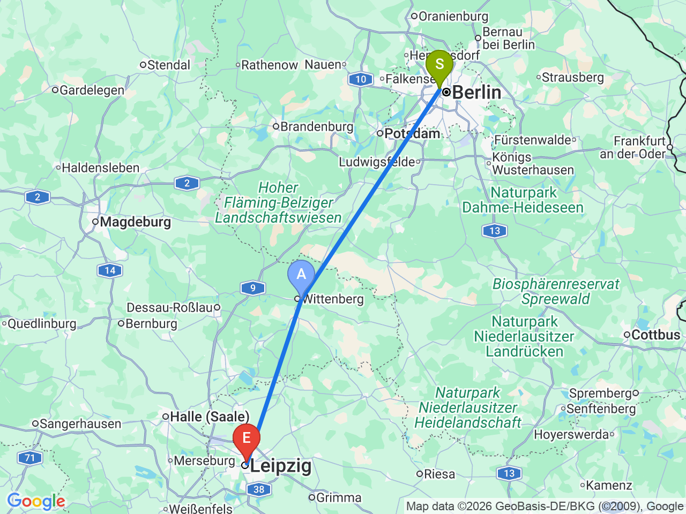
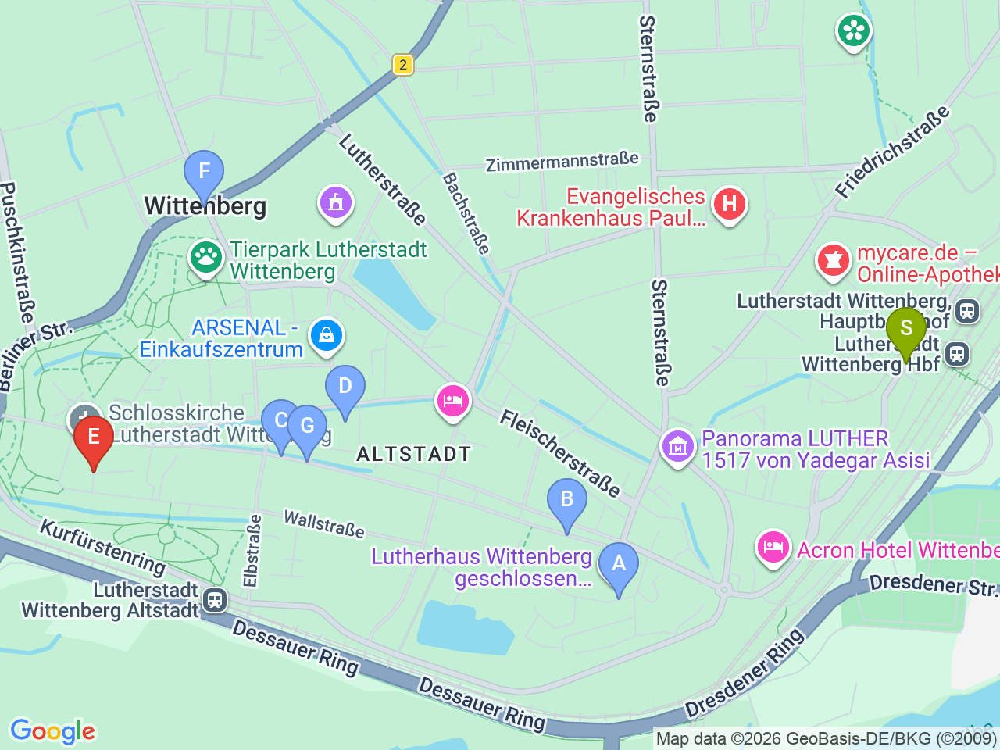
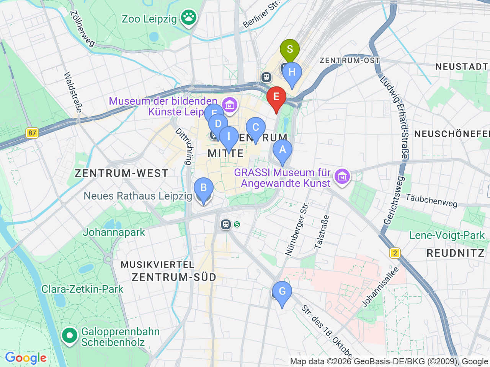

Day 21 · 2026-09-05（六）
德國・柏林/萊比錫/德勒斯登 Day 5/7
維滕貝格宗教改革之旅 → 入住萊比錫
ICE 快車經維滕貝格舊城巡禮路德足跡，傍晚抵達萊比錫展開下一段旅程
⏰Auerbachs Keller（歌德《浮士德》場景名店）2026夏季僅營業至18:00，晚餐恐無法成行；建議改隔天午餐再訪，前往前務必查詢當日營業時間
柏林→維滕貝格→萊比錫

維滕貝格舊城區域

萊比錫市區（含飯店）

固定時間行程DAY 21
| 時間 | 地點 | 地點 (英文) | 交通方式／班次 | 價格 | 預計停留(分鐘) | 備註 |
|---|---|---|---|---|---|---|
| 08:29 | 柏林 Hbf 出發，搭 ICE 505 前往維滕貝格 | ICE約41分鐘 | 已訂票：Wg.5，座位103/104，Standardbereich | |||
| 09:10 | 抵達 Lutherstadt Wittenberg Hbf | 1Lutherstadt Wittenberg Hauptbahnhof, Wittenberg | 步行 | 站內有寄物櫃，可先寄放大件行李；時間更充裕（停留約6小時20分），可放慢步調 | ||
| 15:29 | 步行至車站，搭區域車前往萊比錫 | S2直達約1小時8分，或S8+RE13轉乘約56分鐘 | 持D-Ticket免另購票免劃位，當天彈性搭乘任一班次即可，不用綁定這班；參考S2班次 15:29→16:37 | |||
| 約16:37 | 抵達萊比錫，入住飯店 | 2Vienna House Easy by Wyndham Leipzig, Leipzig | 步行 | 依實際搭乘班次浮動；Check-in 15:00，放行李後還有約2.5小時，可到 Augustusplatz 一帶輕鬆走走 |
彈性探索景點DAY 21
| 地點 | 地點 (英文) | 預計停留(分鐘) | 價格 | 備註 |
|---|---|---|---|---|
| Augusteum（路德珍寶特展） | AAugusteum, Wittenberg | 約45分鐘 | 依現場公告 | 路德故居整修關閉至2027年秋，精選文物移此展出，就在故居前院，值得入內 |
| 梅蘭希通故居外觀 | BMelanchthonhaus, Wittenberg | 約15分鐘 | 免費（外觀） | |
| 市集廣場 | CMarktplatz, Wittenberg | 約20分鐘 | 免費 | 路德・梅蘭希通雕像 |
| 午餐：Brauhaus Wittenberg | DBrauhaus Wittenberg, Wittenberg | 約60分鐘 | 見上方三餐資訊 | 市集廣場旁 |
| 聖瑪利亞市教堂 | FStadtkirche St. Marien, Wittenberg | 約30分鐘 | 免費（或小額捐獻） | 路德講道處 |
| Cranach 庭院 | GCranach-Höfe, Wittenberg | 約20分鐘 | 免費 | 老城中的文藝復興庭院群 |
| 城堡教堂 | HSchlosskirche, Wittenberg | 約30分鐘 | 免費 | 95條論綱之門＋路德墓，必看 |
| Augustusplatz | IAugustusplatz, Leipzig | 約20分鐘 | 免費 | 飯店步行5分鐘，歐洲最大廣場之一，可一次看到歌劇院、布商大廈音樂廳、萊比錫大學塔樓 |
| 新市政廳外觀 | JNeues Rathaus, Leipzig | 約15分鐘 | 免費（外觀） | 仿文藝復興式建築，塔樓為舊城制高點之一 |
| 尼古拉教堂 | KNikolaikirche, Leipzig | 約30分鐘 | 免費（或小額捐獻） | 1989年東德「和平革命」週一示威發源地，歷史意義重大 |
| 市集廣場 & 舊市政廳 | LMarkt, Leipzig | 約20分鐘 | 免費 | 老城核心，文藝復興式舊市政廳外觀 |
| 晚餐：Barthels Hof | MBarthels Hof, Leipzig | 約90分鐘 | 見上方三餐資訊 | 老城10分鐘，就在市集廣場旁 |
| 超市：REWE | NREWE, Leipzig Hauptbahnhof Promenaden, Leipzig | 約20分鐘 | Hbf Promenaden 商場B1，週六營業至22:00、週日也開12-18（德國少見） |
每日三餐
午餐
晚餐
Barthels HofBarthels Hof約 €15-25／人
📍 Hainstraße 1, Leipzig百年薩克森菜老店，老城10分鐘；備案 Bayerischer Bahnhof（世界最古老車站建築改建，萊比錫特色酸啤酒Gose釀造所，S-Bahn一站）
住宿資訊
Vienna House Easy by Wyndham LeipzigHotel Wyndham Leipzig
📍 Goethestraße 11, 04109 LeipzigCheck-in15:00
近萊比錫中央車站